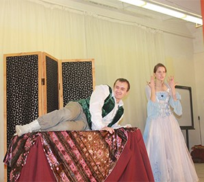
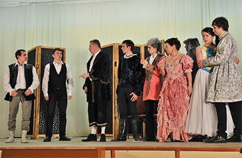
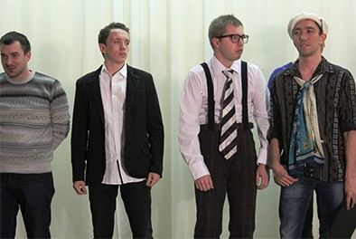
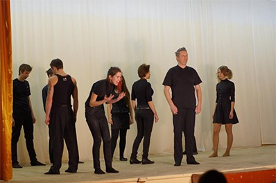
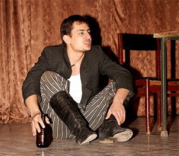
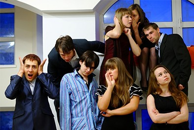
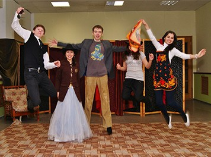
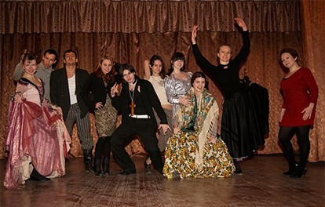
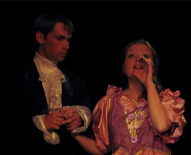

Школа актерского мастерства
Театр-студия и курсы ораторского мастерства
Добро пожаловать в нашу театральную студию! На наших курсах, вы:
- Научитесь уверенно и свободно выступать, как актер и оратор!
- Общаться с любым человеком на любую тему!
- Раз и навсегда преодолеете свои страхи (не только сценофобию, но и многие другие)
- Станете более чутким и психологически гибким. Сыграете самые разные роли!
- Научитесь управлять своим эмоциональным состоянием.
- Станете более убедительным, харизматичным и влиятельным!
- Мы поможем вам понять, как эффективнее достичь ваших целей в жизни;
- Разовьете способность спонтанности и импровизации в творчестве и в жизни!
- Также на наших курсах вы познакомитесь с интересными людьми!

На наших курсах:
- Упражнения на развитие пластики;
- Развитие творческих способностей;
- Речевые техники;
- Актерские техники;
- Психотехники.